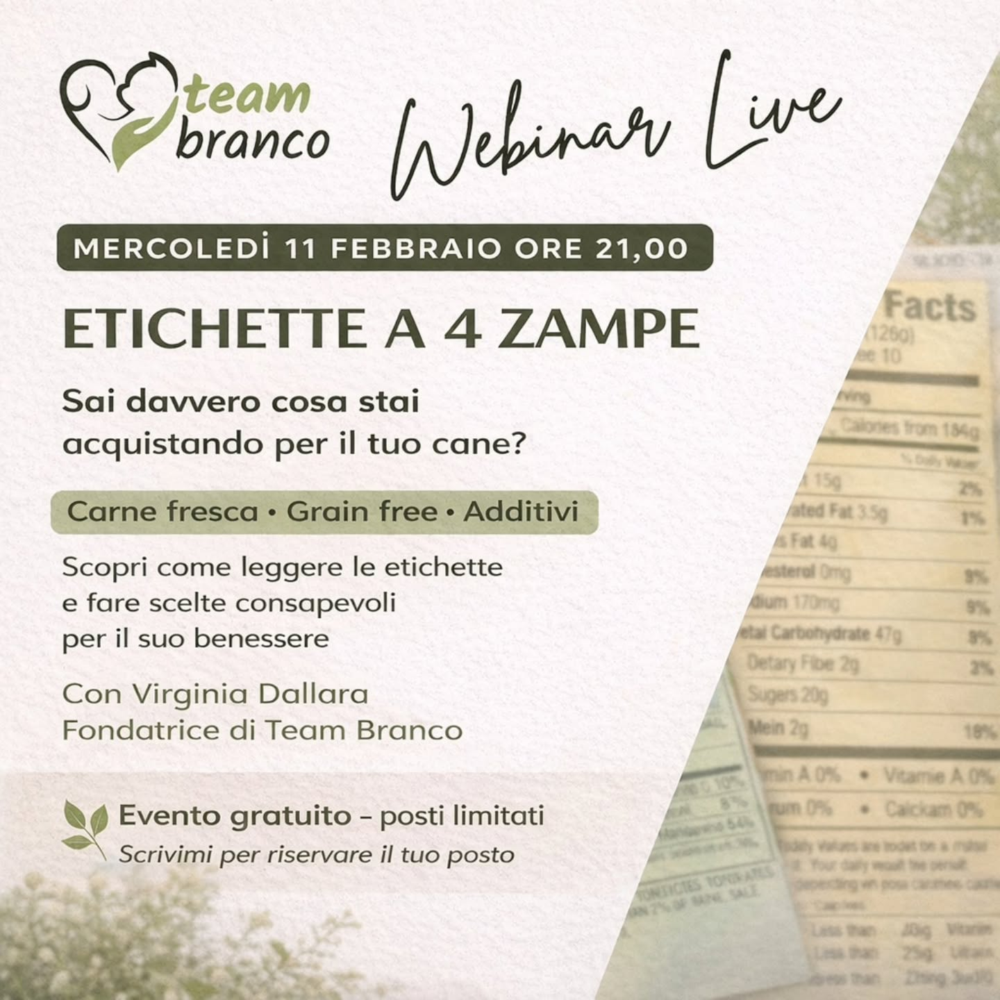

Spunti pratici su alimentazione e benessere, nati dalle domande che mi fanno più spesso famiglie e proprietari. Niente promesse facili: solo informazione che aiuta a scegliere.

Ingredienti, percentuali, “carne fresca” e additivi: cosa guardare davvero prima di mettere un sacco nel carrello.
ApprofondisciQuando l'assenza di cereali ha senso e quando è solo marketing. Una guida onesta, caso per caso.
Presto disponibileCome ciò che mangia il tuo animale influenza energia, umore e gestione quotidiana.
Presto disponibilePubblico nuovi contenuti prima su Instagram. Seguimi su @comunicazionecinofila.
Spesso la risposta più utile arriva da un confronto diretto. Il primo è gratuito.